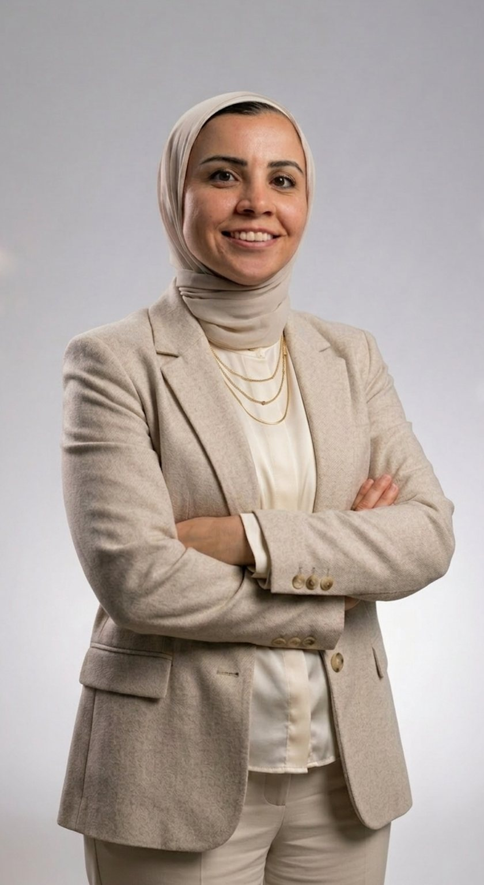

About
Engineer by training. Strategist by practice.
I am Dina Khedr, an independent business and strategy consultant based in Cairo. For eighteen years I have worked at the intersection of strategy, growth and national programs — turning complex mandates into clear direction and measurable outcomes.

From writing software to building growth engines and national programs — the constant has been turning ambition into systems that deliver.
The story so far
Engineering roots
I began as an engineer: a B.Sc. in Communications & Electronics from Alexandria University, then software development at ITI. I worked as a .NET developer, an IT project manager and a technical support manager at Andalusia, leading teams of 50+ people. That foundation still shapes how I work: structured, data-led and focused on systems that hold up in practice.
Growth and partnerships
I moved into growth, partnerships and marketing leadership across Egypt's technology platforms — Bkam, WUZZUF, Buseet, NilePreneurs, almentor, Daftra, Chefaa, JTS and BrainsMingle — building positioning, partnerships and demand engines, including partnerships that enabled 25,000+ companies on WUZZUF.
National programs
Alongside the platforms, I designed and led programs at national scale with partners such as HSBC Egypt, the European Union, the Sawiris Foundation, HTW Dresden, Google and Cairo University — from accelerators and workforce programs to flagship summits.
Independent practice
Today I work independently with founders, institutions and development partners, bringing strategy and delivery together in one engagement.
Career timeline
2008 to today.
- 2008B.Sc. Communications & ElectronicsAlexandria University
- 2009Software Development programITI — then .NET developer, IT project manager and technical support manager at Andalusia, leading 50+ member teams
- Growth & partnershipsBkam
- 2016–2018WUZZUFCreated Egypt's first structured internship program; partnerships enabling 25,000+ companies
- BuseetSales and business growth
- 2019–2022NilePreneursHSBC Egypt accelerator, ECOSYS+ (EU), STREAM (HTW Dresden), NP Explore and Digital Pathways for Employment (Sawiris Foundation)
- almentor · Daftra · ChefaaPartnerships, CRM and brand rebuild
- 2025Marketing Director, JTSBelda rebrand and go-to-market; CU2050 framework selected by the Ministry; Google Gemini student activation
- 2025MBA, Small & Medium EnterprisesAAST Graduate School of Business · GPA 3.94
- 2026Head of Product Marketing, BrainsMingleGrowth and the BrainsMingle AI Summit; CUES 2026 for Cairo University
- 2026Independent consultingBusiness & strategy consultant for founders, institutions and development partners
Credentials
Small & Medium Enterprises
AAST Graduate School of Business · GPA 3.94 · 2025
Communications & Electronics
Alexandria University · 2008
Software Development
Information Technology Institute · 2009
Startup mentor
iceAlex & TIEC (ITIDA)
Working principles
- Clarity before activityA shared definition of the problem and of success comes first.
- Designed for deliveryBuilt for the realities on the ground, not for the slide deck.
- Measured from day oneAgreed KPIs, reported transparently.
- Capability that staysTeams are involved throughout, so the work continues after I leave.
Partners
Government & Institutions
Ministry of Higher Education · Central Bank of Egypt · ASRT · TIEC (ITIDA) · Cairo University
International & Corporate Partners
Google · HSBC · European Union · GIZ · ILO · Erasmus+ · Udacity · Sawiris Foundation · HTW Dresden
Academic & Industry Partners
Nile University · WUZZUF · Forasna · BrainsMingle · Daftra · almentor · Chefaa · Belda
Let's shape
what comes next.
Begin with a 30-minute discovery conversation, or share the brief for your next initiative.